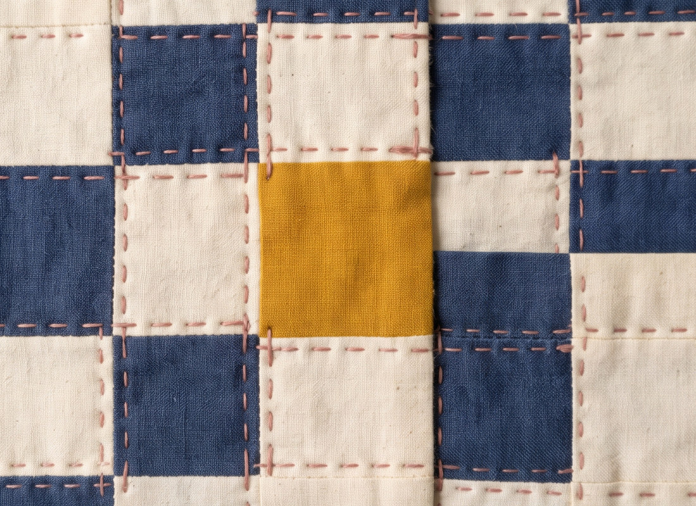
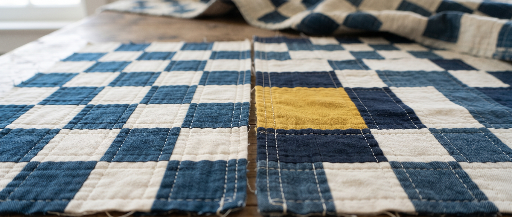
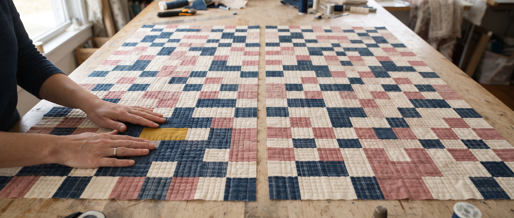

The Two Panels. A command line differ that lays two configuration files side by side and picks out every square where they differ: additions, deletions, and modifications, shown using difflib.

--type defaults to yamlpython3 main.py [--type json|yaml|ini] [--output OUTPUT] [--schema SCHEMA] FILE1 FILE2
| Option | What it does |
|---|---|
FILE1, FILE2 | Paths to the two configuration files to compare. |
--type | Type of configuration files: json, yaml, or ini. Default: yaml. |
--output, -o | Output file to write the diff to. |
--schema | Path to a JSON schema file for validating the config files before diffing. |
-h | Show help message and exit. |

--output, the diff was written to the named file.--schema, a config that fails the schema exits 1 and no diff is produced. A failing schema means no diff exists; that is the recorded behavior, not a fault.--output is given, no file is written at all, so a diff file left by an earlier run survives untouched.